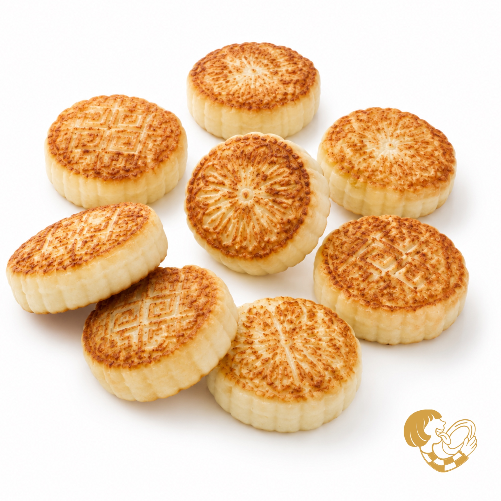
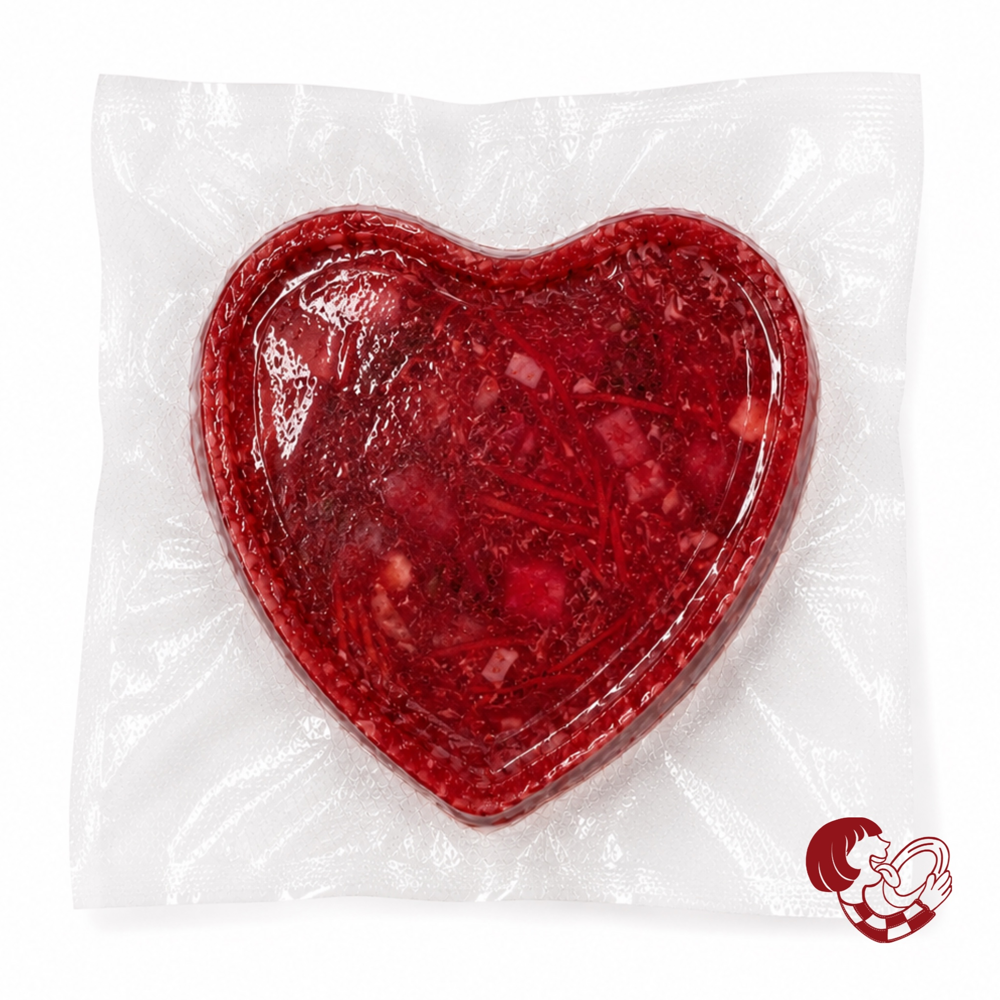
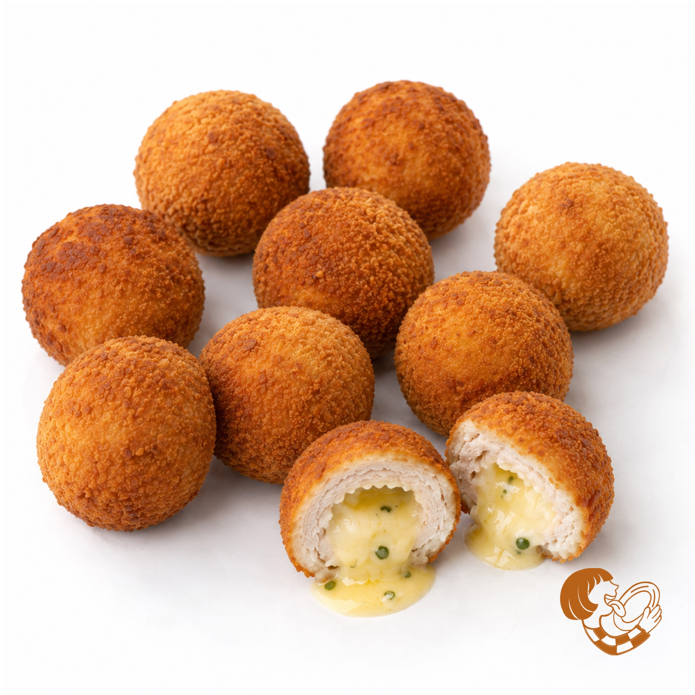

A small Ukrainian family business bringing the warmth of home cooking to the Netherlands.
Modern life is busy. Cooking every day isn't always realistic. We created Hutko to make it easier — not to replace cooking, but to simplify it. So you always have a Plan B in your freezer.
Some mornings you want a real breakfast — not just a quick snack. Syrnyky or Shakshuka — ready in minutes.
Syrnyky: 10 minutes, one pan, no mess. A small ritual without the effort.
Shakshuka: heat the base and add eggs the way you like — savoury or slightly sweet.
💡 Try syrnyky with bacon — unexpectedly good.

Borscht or Solyanka — just heat and enjoy.
Borscht is fully cooked — you can even reheat it in the microwave.

Long day. Unexpected guests. No energy to cook.
Take out the Chicken Balls. 10–15 minutes — done.
Inspired by Kyiv-style chicken, made bite-size so they cook evenly every time. No stress. No guesswork. Just food.

Hutko was launched in March 2026 by Maria Vyshnivska. Maria is originally from Ukraine and moved to the Netherlands during COVID.
Before Hutko, she was a co-organizer of Ukrainian festivals in the Netherlands — LUCHT — projects where food and culture brought people together. She studied Hotel & Restaurant Management and has spent her whole life connected to the restaurant industry and food. For her, food has always been a way to care for people.
After moving to the Netherlands, Maria noticed a gap in the market: there were many food delivery services, but very few personalised, high-quality frozen meals made with real ingredients. That idea became Hutko.
Ukrainian cuisine is one of the oldest and most distinctive in Eastern Europe, shaped over centuries by the country's fertile black soil, its harsh winters, and the deeply communal nature of Ukrainian village life. Long before it became a source of national pride, Ukrainian food was simply survival — hearty, warming, and made to last. Grains, root vegetables, fermented dairy, freshwater fish, and foraged mushrooms formed the backbone of a diet that was both humble and extraordinarily flavourful. Over generations, Ukrainian home cooks elevated these simple ingredients into a cuisine of remarkable depth, layering flavours with patience and an instinctive understanding of seasonality.
"Ukrainian food is not just cooking — it is memory, identity, and love passed down through hands that never needed a recipe written down."
Borscht is arguably Ukraine's most iconic dish and one of the oldest soups in European culinary history, with roots stretching back to the Kyivan Rus period. Originally brewed from hogweed, the soup evolved as beetroot was introduced and became its defining ingredient. In 2022 UNESCO added Ukrainian borscht to its list of intangible cultural heritage, recognising its role as a living symbol of Ukrainian identity. Every family in Ukraine has their own version — but all are made with the same intention: to warm both body and soul.
Syrnyky — cottage cheese pancakes — are one of Ukraine's most beloved breakfast traditions. The name comes from "syr", the Ukrainian word for fresh white cheese, which forms the base of the batter. Unlike ordinary pancakes, syrnyky are dense, protein-rich, and gently sweet, with a golden crust and soft creamy interior. They have been part of Ukrainian village cooking for over two centuries, originally appearing as a way to use excess fresh curd cheese. Served with sour cream, honey, or jam, syrnyky remain one of the first foods Ukrainians feel nostalgic for when far from home.
Our Kyiv Chicken Balls are a playful reimagining of the legendary Chicken Kyiv — one of Ukraine's most internationally recognised dishes. The classic is a breaded cutlet stuffed with herb-infused butter that melts dramatically when cut — a dish that became a symbol of Ukrainian culinary sophistication during the Soviet era. Our bite-sized version captures the same magic in a format perfect for sharing, snacking, or impressing guests without any of the fuss of a full cutlet.
Solyanka is a thick, robust soup with a uniquely tangy character — pickles, olives, capers, tomatoes, and various meats creating a flavour profile unlike anything else in Eastern European cooking. Its name derives from the Old Russian word for salt, reflecting its origins as a heavily seasoned peasant dish designed to make the most of cured ingredients during long winters. Our version is rich, warming, and finished with a slice of lemon — exactly as tradition demands.
While shakshuka has deep roots in North African and Middle Eastern cooking, it found an enthusiastic home in Ukrainian kitchens, particularly in the south and west, where tomatoes grow abundantly. Ukrainian shakshuka is typically bolder and spicier, enriched with local paprika and slow-cooked until the tomato sauce reaches an almost jammy intensity. It reflects Ukraine's position as a crossroads of civilisations — a country that has always absorbed and reimagined the culinary traditions of its neighbours.
Zrazy have a distinguished history stretching across Ukrainian, Polish, and Lithuanian cuisines — a reminder of the centuries during which these nations shared a common commonwealth. Originally zrazy referred to rolled meat stuffed with a savoury filling, refined enough for Polish nobility in the 16th century. Over time, Ukrainian cooks developed oval patties stuffed with mushrooms, cheese, or buckwheat — simpler in form but no less satisfying. Our zrazy follow this village tradition: pan-fried until golden, filled with forest mushrooms and melted cheese, as comforting as anything a grandmother could place in front of you.
Subscribe to our newsletter and get Ukrainian food stories, new dish announcements, seasonal recipes, and exclusive offers.
No spam, ever. Unsubscribe at any time.